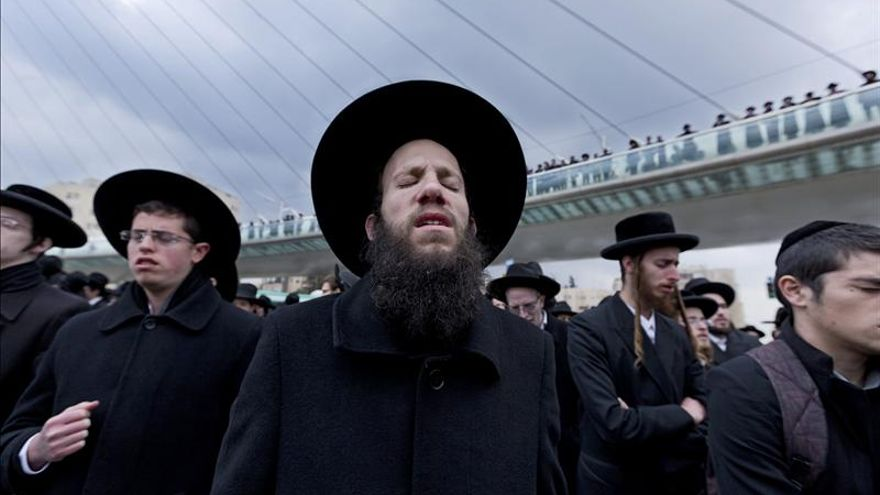

Los Judíos tienen rabinos en vez de sacerdotes. Ellos se especializan en él estudio de las lecturas, la ley Judía y dirigen espiritualmente a la sinagoga y su comunidad.

Distribucion de cantidad de Judíos
Los judios tienden a ser bastante cerrados, en especial los más ortodoxos, tienen comunidades alrededor de sus sinagogas, etc. Esto es algo que mucha gente vé con malos ojos, en especial ideologías similares al nazismo, pero no los culpo. Despues de siglos de ser perseguidos, que culminaron explosivamente en él Holocausto, no es sorpresivo que se hayan cerrados a si mismos y no se abran tanto al mundo, despues de ser pisoteados por siglos.
Judíos, un pueblo cerrado